Gestión de usuarios
Antes de continuar, vamos a recapitular unos términos claves:
- Un usuario es una persona que tiene un perfil para administrar o consultar la información de una cuenta.
- Un perfil es un conjunto de permisos para acceder a una cuenta.
- A usuario puede tener uno o más perfiles, esto significa que un usuarios puede acceder a múltiples cuentas y múltiples comercios.
Para más información, lee los conceptos detrás del Módulo PayU.
Permisos requeridos
Para tener acceso a este módulo, necesitas un perfil con los siguientes permisos activos:
- Consultar usuarios
Este permiso te permite buscar un usuario en particular. - Crear, editar y eliminar usuarios
Consulta Perfiles y Permisos para más información.
Gestión de usuarios
Para gestionar usuarios, ingresa a tu cuenta PayU y haz clic en el menú Configuración en la parte superior de la pantalla y luego, selecciona Gestión de usuarios.
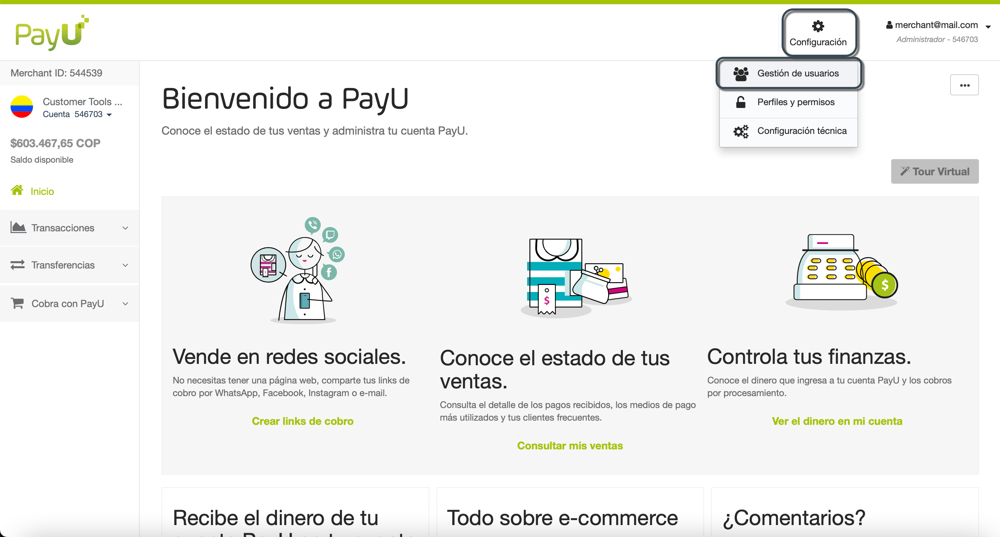
Se abre el módulo de Gestión de usuarios, aquí puedes ver la lista de usuarios disponibles junto con su estado, las cuentas a las que pueden acceder y su perfil.
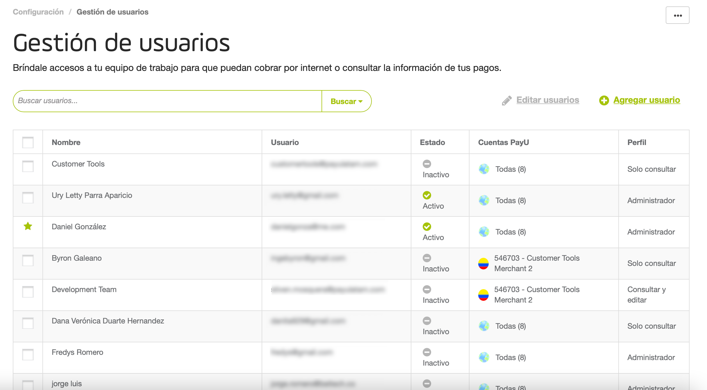
Nota
Los usuarios marcados con una estrella verde ( ) son usuario predeterminados, los cuales no pueden ser borrados (desactivados).
) son usuario predeterminados, los cuales no pueden ser borrados (desactivados).
Agregar usuarios
Puedes crear un usuario utilizando su correo electrónico o utilizando un nombre de usuario. Sigue estos pasos para crear un nuevo usuario.
- En el módulo Gestión de usuarios, haz clic en Agregar usuario.
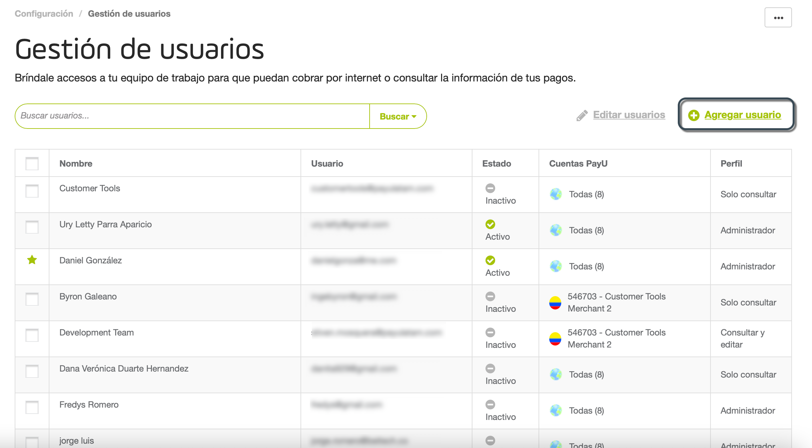
- Aparece la ventana de Agregar usuario. Aquí puedes ingresar la información de la persona a la que se permitirá recolectar pagos en línea y verificar la información de los pagos, de acuerdo con los permisos que le otorgues.
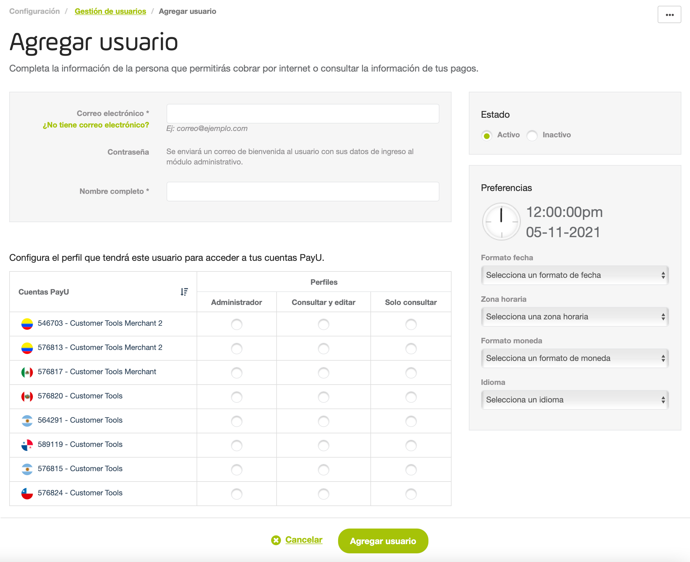
- Ingresa la siguiente información:
- Correo electrónico: dirección de correo electrónico del nuevo usuario. PayU envía la información para iniciar sesión a esta dirección, asegúrate de que sea válida y que el usuario tenga acceso a él.
O si lo prefieres, puedes crear un usuario sin utilizar dirección de correo electrónico. Esto es útil cuando el usuario que quieres crear está atado a un rol y no a una persona específica. Para hacer esto, haz clic en ¿No tiene correo electrónico? e ingresa la siguiente información:- Usuario: nombre de usuario utilizado para iniciar sesión. Este nombre de usuario no puede tener números o caracteres especiales.
- Correo electrónico (Admin): ingresa la dirección de correo electrónico del usuario administrador al cual, PayU envía la información para generar o recuperar la contraseña de este usuario.
- Nombre completo: nombre del usuario que deseas crear.
- Estado: define si el usuario que vas a crear está Activo o Inactivo.
- Configura las preferencias de usuario. puedes configurar las siguientes:
- Formato fecha: cambia el formato en que quieres mostrar las fechas en tu módulo PayU,

Puedes utilizar cualquiera de los siguientes formatos:
| Formato | Ejemplo 24 de Agosto de 2021 |
|---|---|
| dd/mm/aaaa | 24/08/2021 |
| mm/dd/aaaa | 08/24/2021 |
| aaaa/mm/dd | 2021/08/24 |
| aaaa/mmm/dd | 2021/Ago/24 |
| dd-mm-aaaa | 24-08-2021 |
| mm-dd-aaaa | 08-24-2021 |
| aaaa-mm-dd | 2021-08-24 |
| aaaa-mmm-dd | 2021-Ago-24 |
- Zona horaria: cambia la zona horaria del país en el que deseas visualizar la información de las transacciones.

- Formato moneda: cambia el formato en el que deseas visualizar los valores monetarios en tu Módulo PayU.

- Idioma: cambia el idioma de tu Módulo PayU.

- Al final de la pantalla, se cargan todos los perfiles (predeterminados y personalizados) junto con las cuentas del comercio actual. Configura el acceso a cada cuenta configurando un perfil, si no quieres que tenga acceso a una cuenta, no selecciones ningún perfil.
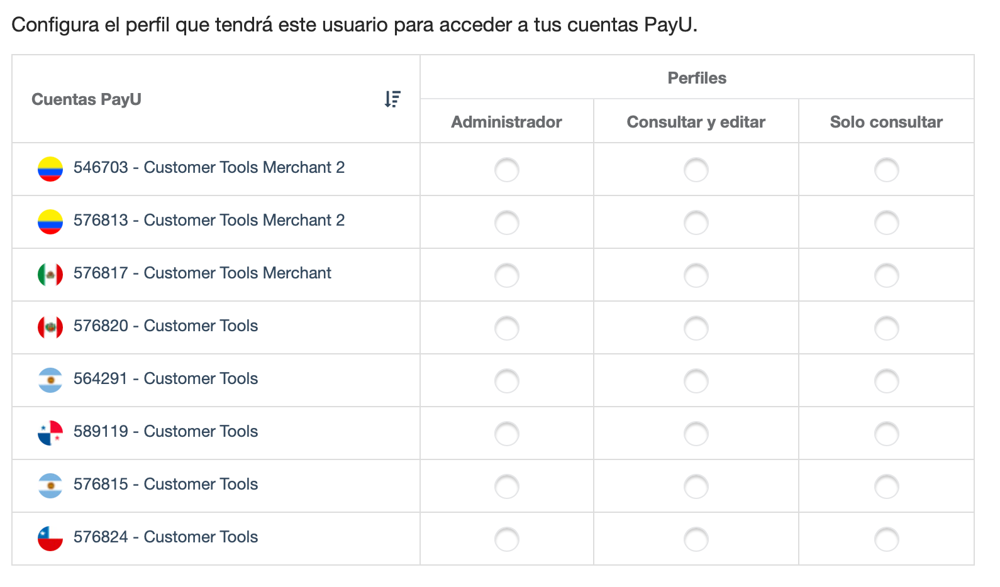
Nota
Si quieres asignarle un perfil personalizado, debes crearlo primero.- Una vez termines, haz clic en Agregar usuario.
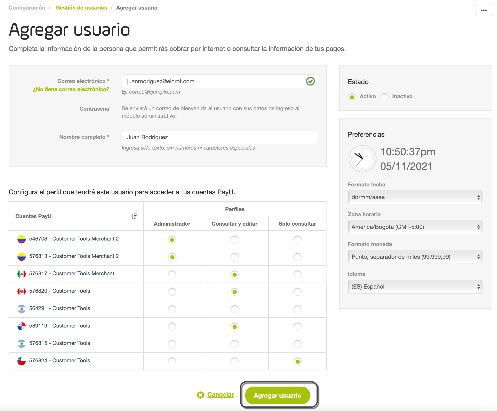
- En este punto, ¡has agregado el nuevo usuario! Enviamos un correo electrónico a la dirección del usuario para que pueda acceder al Módulo PayU.
El nuevo usuario debe activar la cuenta utilizando el botón Activa tu usuario en el cuerpo del correo.
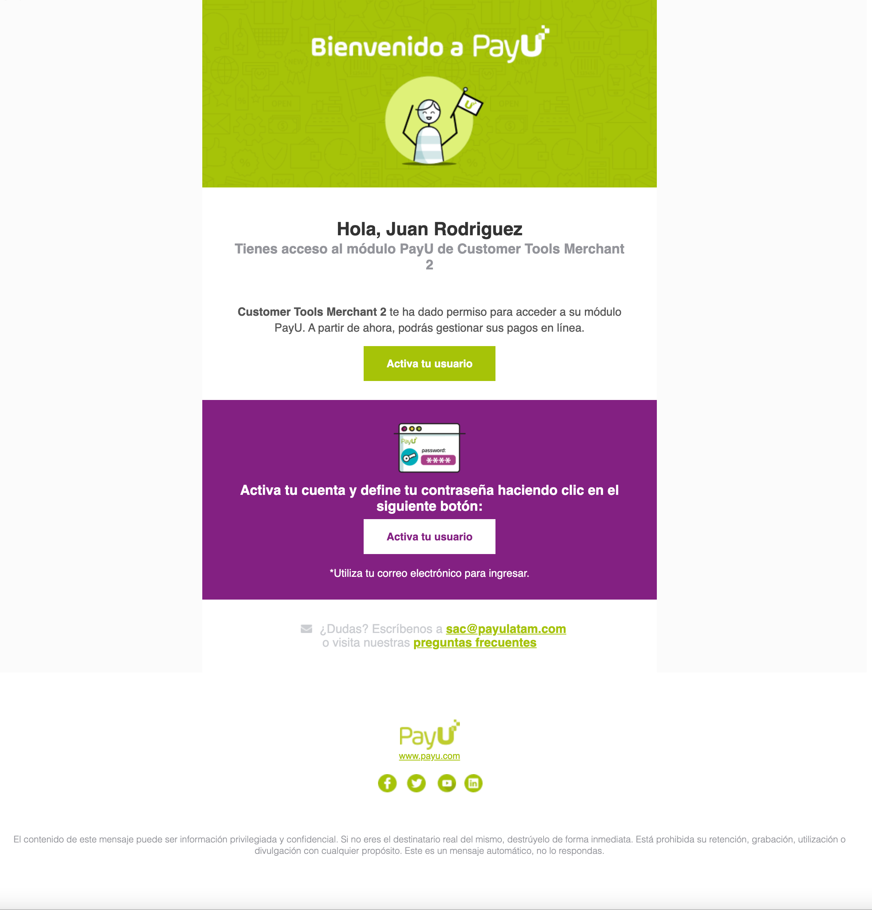
Nota
Si el usuario se creó sin usar el correo electrónico, las instrucciones para activar la cuenta se envían al correo electrónico de administrador que definiste.- El nuevo usuario debe asignar una nueva contraseña para acceder a la cuenta.
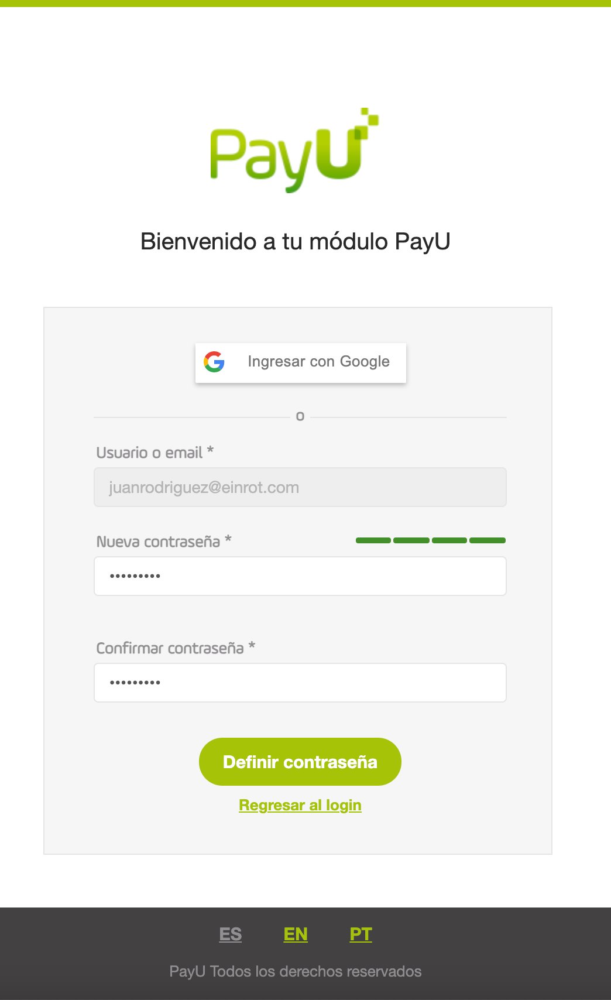
- Una vez que el usuario establece la nueva contraseña, puede acceder a las cuentas seleccionadas usando sus credenciales.
Buscar usuarios
Cuando necesites encontrar un usuario específico, puedes utilizar las opciones de filtro para encontrar uno o más usuarios que cumplan con determinadas condiciones.
En el módulo Gestión de usuarios, haz clic en el campo Buscar usuarios para ver los filtros disponibles.
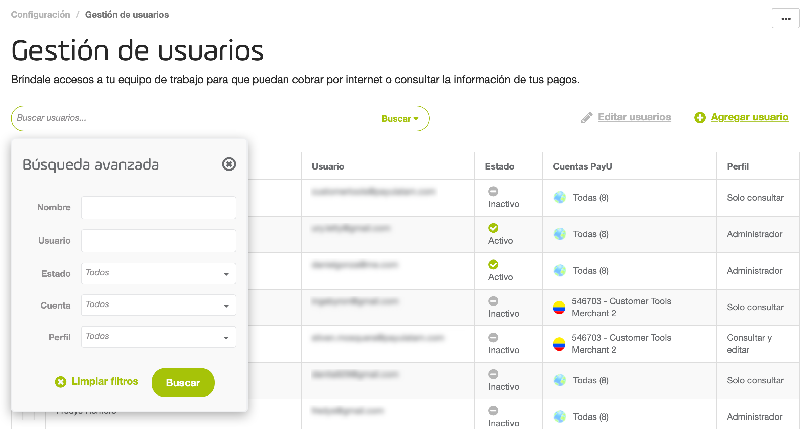
Una vez hayas seleccionado los filtros, haz clic en Buscar. Todos los usuarios que cumplen las condiciones seleccionadas se muestran en la tabla.

Si quieres eliminar un filtro, haz clic en el ícono x junto a él.
Editar usuarios
A través del módulo de Gestión de usuarios, puedes actualizar algunas propiedades de un usuarios. para actualizar un usuario, búscalo y haz clic en él.
Aparece la ventana de Editar usuarios.
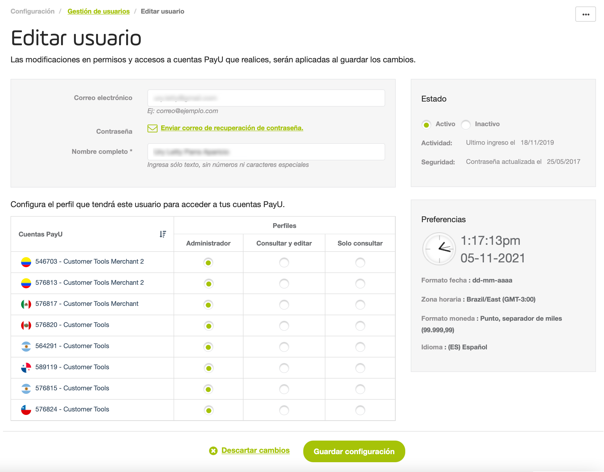
Puedes actualizar la siguiente información:
- Nombre completo de un usuario
- Solicitar la recuperación de la contraseña.
- Actualizar el estado del usuario (activo o inactivo)
- Cambiar o eliminar el perfil asignado a una cuenta determinada.
Nota
La información de las preferencias del usuario no se puede actualizar mediante esta opción, esta información es actualizada por cada usuario por su cuenta.Una vez termines, haz clic en Guardar configuración para aplicar los cambios.
Editar múltiples usuarios
Para editar varios usuarios, búscalos y utiliza la casilla de verificación de la izquierda. Luego, haz clic en Editar usuarios (n).
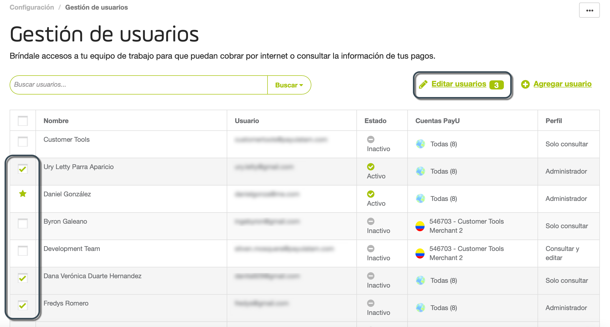
Aparece la ventana de Editar usuarios (n), donde puedes actualizar la siguiente información:
- Solicitar la recuperación de contraseña para todos los usuarios.
- Actualizar su estado de usuario (activo o inactivo)
- Asignar un perfil a una cuenta determinada.
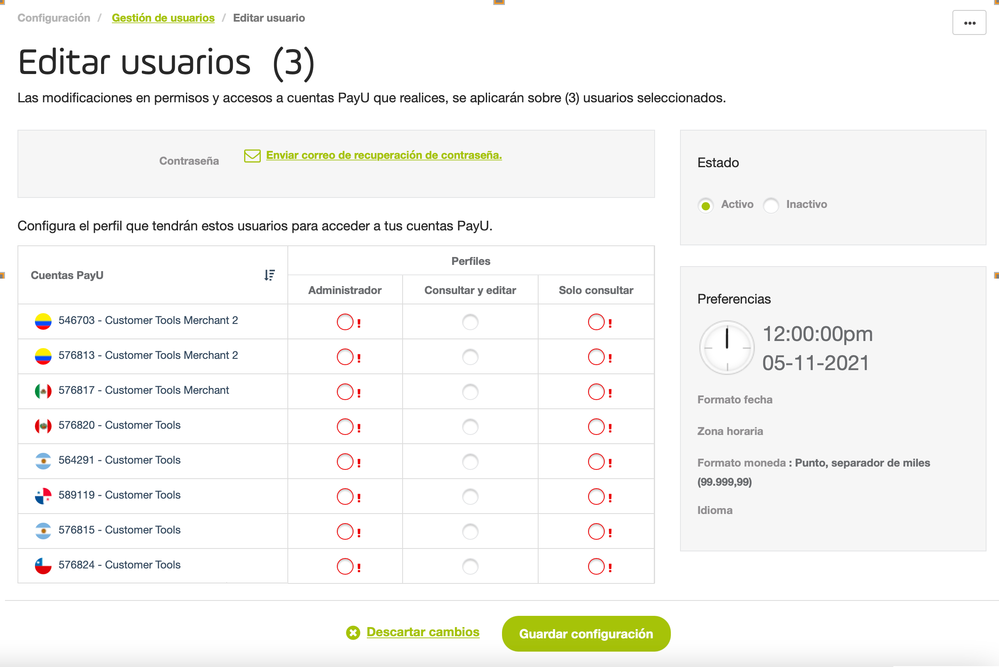
Ten en cuenta que al utilizar esta opción, todos los usuarios tendrán la misma configuración que definas aquí.
Una vez termines, haz clic en Guardar configuración para aplicar los cambios.